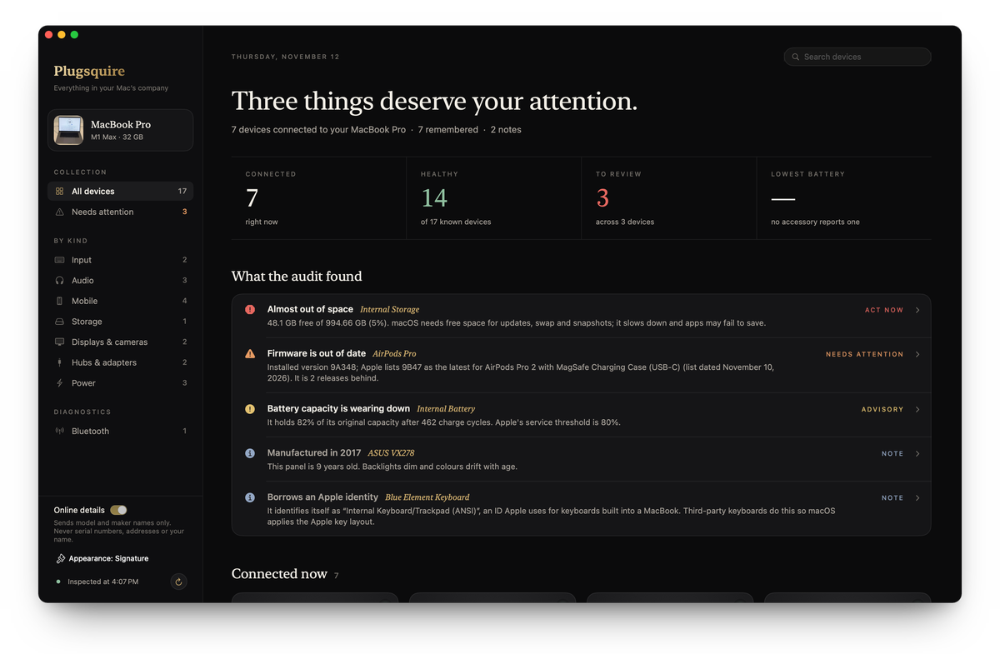
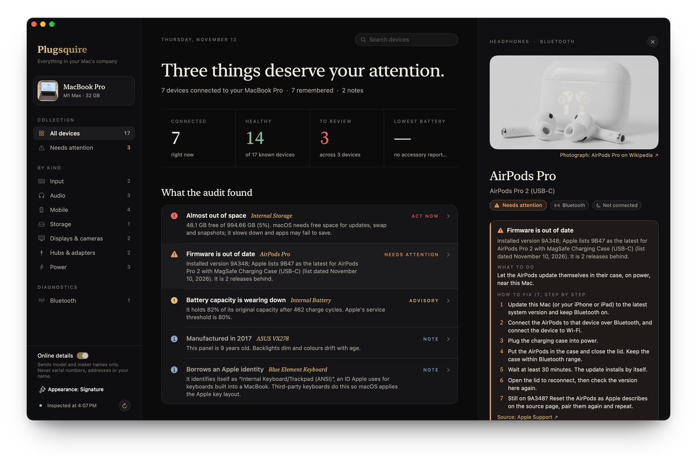
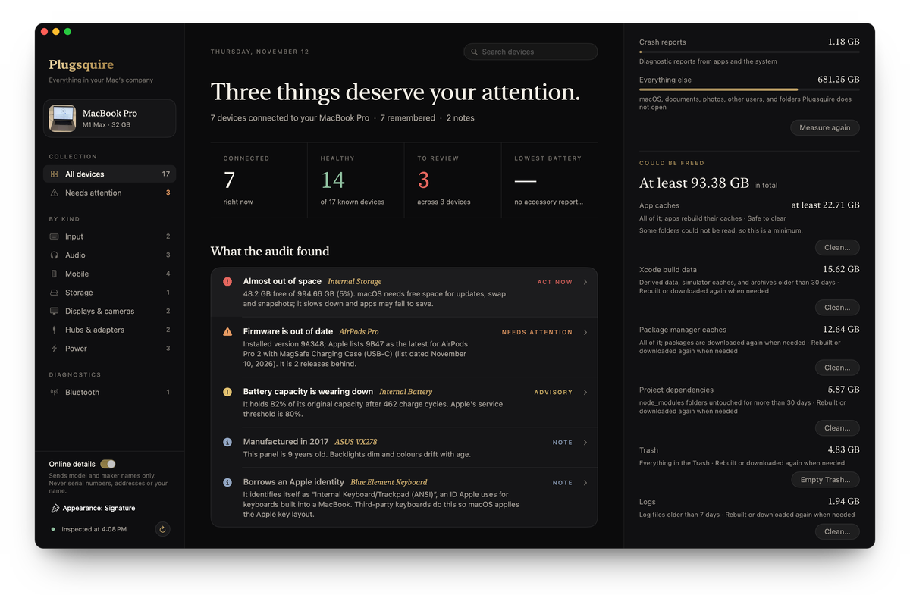
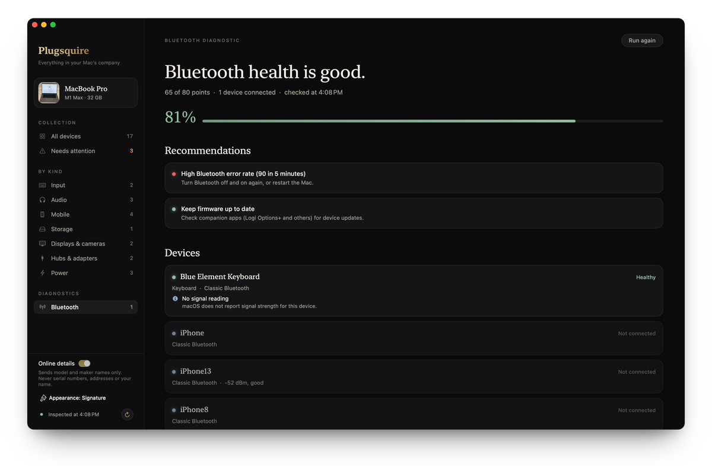
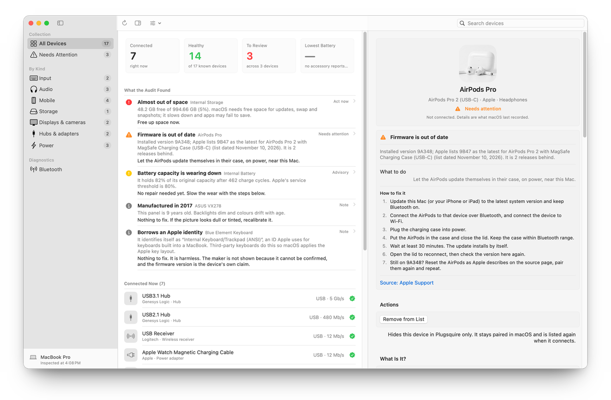
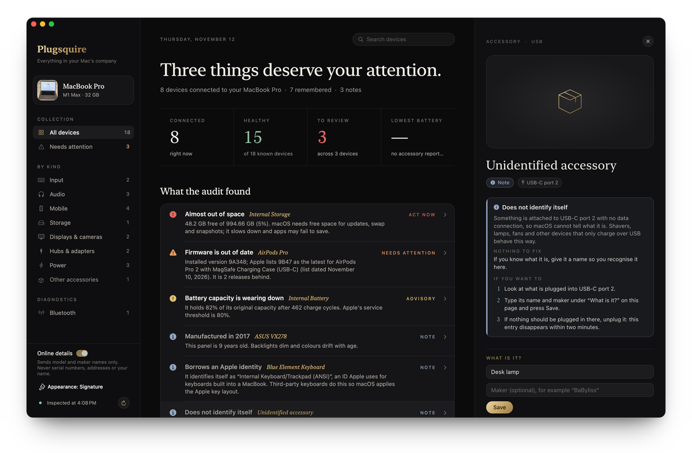

Every bus in one inventory
USB with its hub tree, Bluetooth (connected and remembered), Thunderbolt, displays, storage, the power adapter, the internal battery, cameras and audio.
Everything in your Mac's company.
Plugsquire lists every device on every bus of your Mac, says what each one is, and checks it for problems. Each finding comes with its evidence and the fix.

macOS spreads what it knows about your devices across System Information, Bluetooth settings, Disk Utility and the battery menu, and it rarely tells you when one of them has a problem.
An external SSD copies slowly, and nothing tells you it negotiated a slow USB link.
Your Mac charges slowly through a hub, and nothing shows the power it asked for next to the power it got.
Your AirPods run outdated firmware, and a Bluetooth mouse keeps dropping out. The clues sit in reports and logs you never open.
You blame the drive, the cable or the Mac, and replace a part that works.
A disk whose S.M.A.R.T. status reports failing keeps holding files you have no other copy of.
Caches, build data and old backups fill the internal disk until macOS warns you it is full.
Plugsquire reads your Mac's own system report and puts every connected device in one list: what it is, how it is connected, and whether anything needs your attention.
USB with its hub tree, Bluetooth (connected and remembered), Thunderbolt, displays, storage, the power adapter, the internal battery, cameras and audio.
Vendor and product IDs, serial, firmware, negotiated link speed, power granted versus power wanted, and the battery level of each component.
Low or worn batteries, outdated AirPods firmware, drives on a slow USB link, slow charging through a hub, failing S.M.A.R.T. status, low disk space, weak Bluetooth signal. Each finding names its evidence, gives numbered steps, and opens the right System Settings pane where one exists.
A shaver or a lamp charging over USB-C sends no data, so it never appears in the USB list. Plugsquire reads the port controller, shows it on its port as an unidentified accessory, and lets you name it.
See where the internal disk's space goes by category, how much could be freed, and how safe each category is to clear.
System Information shows raw reports, one section at a time. Plugsquire joins them, explains them and tells you what to do, using only public macOS interfaces: no root access, no private APIs, no helper daemon.
Five screens from the app, from a finding's fix guide to the switch that makes Plugsquire look like any other Mac app.
Open a device to see the evidence, what to do in one line, numbered steps where they help, and the source they come from.

The storage breakdown is free: each category, its size and how safe it is to clear. With Pro, Clean lists exactly what would go and asks before anything is removed.

Signal, protocol, load, recent errors and companion software, scored with the same checks and thresholds as bt-diagnostic.sh, then turned into recommendations.

The Native macOS appearance uses standard controls and follows light or dark mode and your accent colour. Switch in Settings (⌘,) or the View menu.

A charge-only USB-C device shows up on its port as an unidentified accessory, and you can say what it is. Needs an Apple silicon Mac.

It scans every bus at launch, again every two minutes, and whenever a USB device is plugged in or removed.
Devices that need attention are flagged; observations that need no action are labelled "Nothing to fix".
Each finding says what to do in one line, then gives numbered steps and its source.
The overview, a finding's fix guide, and storage cleaning (Pro), on a silent loop.
[proof needed — quote, name and role of a Plugsquire user]
The storage categories and age rules follow mdoctor, an open-source Mac health tool.
The Bluetooth diagnostic runs the same checks, thresholds and score as the bt-diagnostic.sh script it was ported from.
$0
$4.99one-time
One payment for the version you buy and the updates published for it. Not a subscription.
Until the licence check ships, early builds have every Pro feature turned on.
[proof needed — refund policy]
Only a public model name and a maker name, to look up product details. Serial numbers, Bluetooth addresses, volume names and the names you give devices stay on your Mac. Turn "Online details" off and the app works offline with its bundled data.
Macs running macOS 14 or later. Spotting power-only devices on USB-C ports needs an Apple silicon Mac.
No. It uses no root access, no private APIs and no helper daemon. Full Disk Access is optional: without it, the Trash and iPhone backups show as "Not measured".
Nothing is removed until you press Clean for a category and confirm the exact list. Xcode archives and iPhone backups go to the Trash, so you can put them back. Cleaning stays inside that category's folders in your home folder, and out of Desktop, Documents, Downloads, Pictures, iCloud and Mail.
No. It tells you when AirPods firmware is out of date, using Apple's published list. Other makers publish no common feed, so their devices show the installed version without a verdict.
The App Store sandbox blocks the hardware reads Plugsquire depends on, so it is distributed outside the store.
No. Pro is a one-time $4.99 payment for the version you buy and the updates published for it.
The core app is free. Pro is a one-time $4.99, with no subscription.
Request an Early Build